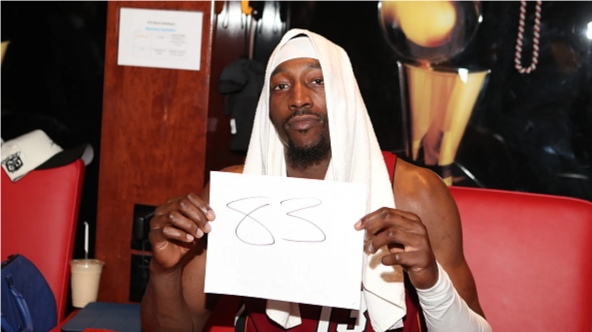

Sports
Bam Adebayo's 83 point game - Samuel Yepez
Bam the Great, or Bam the Fake? On Tuesday, the 10th of March, Miami Heat all-star Bam Adebayo scored a record-breaking 83 points against the Washington Wizards. This was a record-breaking performance that...